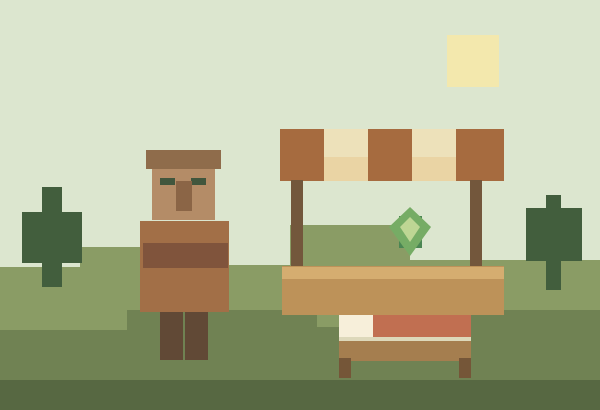

Missed sleep has consequences
Loaded rest-period ticks spent awake build sleep debt. With defaults, restrictions start at two night-equivalents and a strike starts at six.
Villagers trade according to actual sleep and sustained panic. Give them reachable beds and calm conditions so they can use their full trade quantities.
0.1.0 Beta · Minecraft Java 26.2 · Fabric

Workstations and normal vanilla restocking conditions still apply. There is no building check or food requirement.
Loaded rest-period ticks spent awake build sleep debt. With defaults, restrictions start at two night-equivalents and a strike starts at six.
Sustained or repeated panic adds stress. Brief scares initially have no penalty; calm ticks reduce stress again.
Consecutive actual sleep clears fatigue. Stress also needs calm time. The stronger of the two quantity restrictions applies.
This chart shows only the default sleep factor, without stress. One night-equivalent means 12,000 loaded rest-period ticks spent awake.
Missed night-equivalents →
Simplified rule model, not a running game. Actual usable trades depend on the offer, rounding and uses already consumed.
The mod reads the villager’s actual sleeping state. By default, 200 consecutive sleeping ticks clear fatigue, which is ten seconds at 20 TPS.
Player-skipped nights have a separate rule: at least 20 already observed consecutive sleeping ticks, with the villager still asleep at the skip. Awake villagers receive no free recovery.
Unloaded time also creates no new penalties. Sleep debt only builds in dimensions where vanilla allows skipping the night.
Back up your world and first try the beta on a copy.
Use Minecraft Java 26.2, Java 25 and Fabric Loader 0.19.5 or newer. Install Fabric API 0.159.0+26.2.
Place the Ethical Trading JAR in the server’s mods folder and start it. Clients do not need this mod.
config/ethical-trading.json is created automatically. Adjust values if needed, then restart the server.
Minecraft Java 26.2 · Fabric · Java 25
SHA-256 checksum · Release notes
This beta targets only Minecraft Java 26.2 with Fabric. Bedrock, NeoForge and older game versions are not included.
Graphical-client play, large trading halls and the integrated singleplayer server have not been separately verified. The test report details the server tests already performed.
Detailed configuration and test documents are currently in German.
The mod checks no minimum floor area and requires no food. An accessible bed per villager is enough for sleep; workstations and normal vanilla restocking conditions still matter.
No. The stronger quantity restriction applies. By default, stress reduces quantities by at most 50%. Configuration allows different values.
It adds quantity limits. Prices, demand, XP and normal vanilla curing are not rerolled or replaced.
No. The chart explains the default sleep factors in your browser. It runs no Minecraft code and accounts for neither stress nor individual offers.